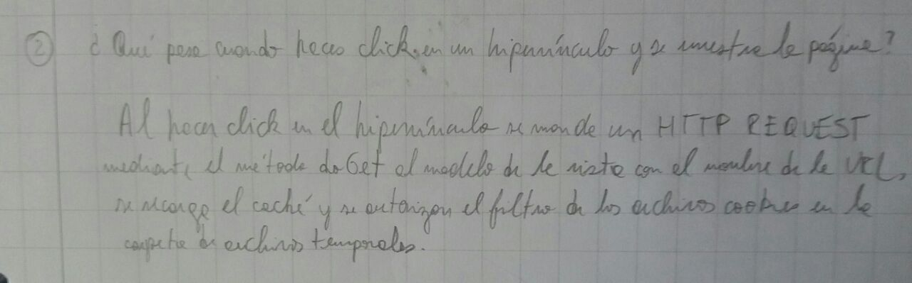

Respuesta original

Solución:
Los pasos que ocurren al momento de hacerle click a un enlace son:
- El navegador verifica el caché para buscar la IP del enlace
- Si no lo encuentra en el cache, solicita informacion al dns
- Se inicia una conección TCP con el servidor
- El cliente envía un paquete SYN al servidor preguntando si está abierto a nuevas conexiones
- Si el servidor está disponible responde con un SYN/ACK paquete
- El cliente reconoce el SYN/ACK y envía un ACK
- La conexión TCP es establecida
- El navegador envía una petición HTTP get
- El servidor reconoce la petición
- El servidor envía la respuesta
- El cliente recibe la respuesta desde el servidor
Volver